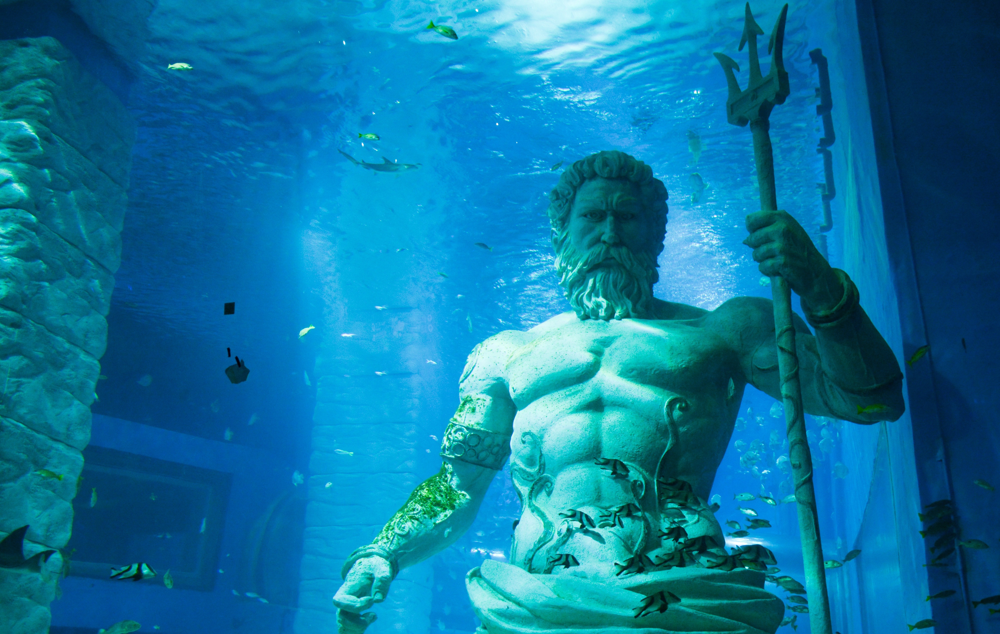
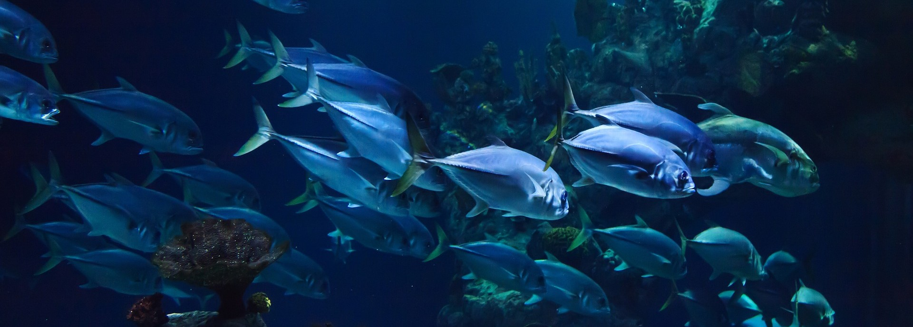
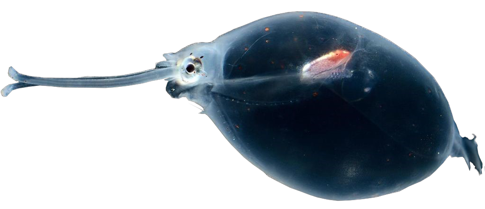
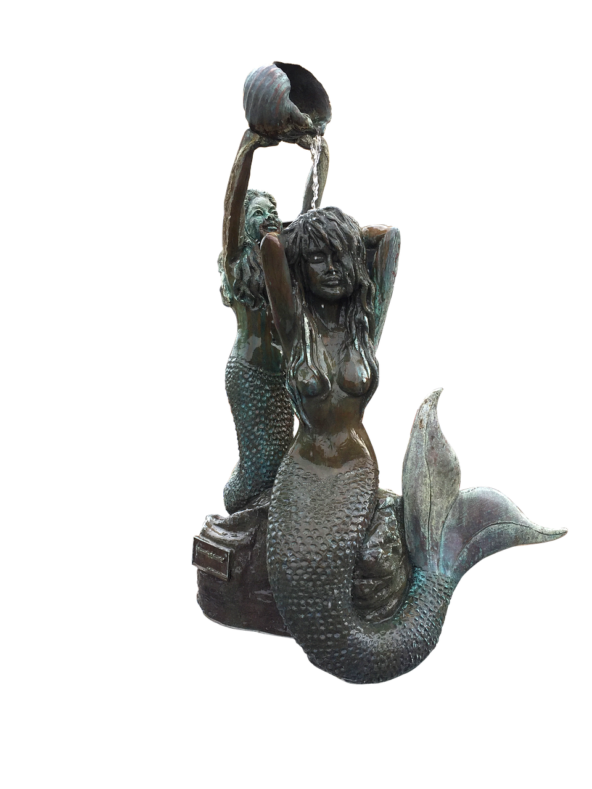
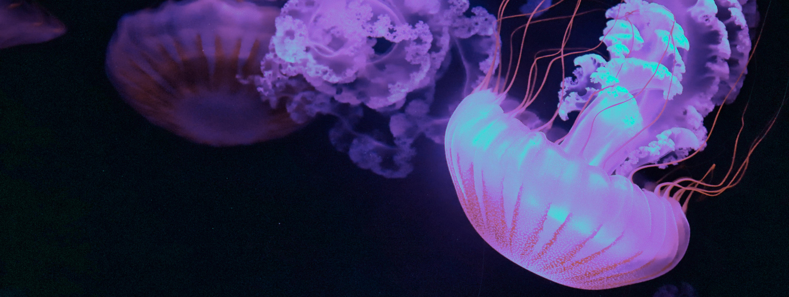

Unser Zoo - Neptunias Abgrund


Unsere Tiere
Erkunde die faszinierende Welt der Tiefseefische und tauche ein in eine unvergleichliche Unterwasserwelt - Klicke auf unseren Button und entdecke alles über die einzigartigen Kreaturen, die in unserem Zoo zu Hause sind.
Unser Zoo beherbergt eine erstaunliche Vielfalt an Tiefseefischen, darunter auch einzigartige Arten wie den Regenbogenrochen "Jochen" und das atemberaubende Korallenriff "Koralarif" - Lass dich von unserer einzigartigen Sammlung verzaubern und entdecke die faszinierende Welt der Ozeane.
Zu TiereUnser Shop
"Besuche unseren Zoo-Shop und nimm dir ein Stück der faszinierenden Tiefseewelt mit nach Hause! Entdecke unsere exklusiven Souvenirs, von kunstvollen Meerjungfrauenstatuen bis hin zu Plüschversionen unserer einzigartigen Tiefseefisch-Sammlung. Unsere Produkte sind einzigartig und werden dich noch lange an deinen Besuch in unserem Zoo erinnern.
Speziell für unsere jüngsten Besucher haben wir eine große Auswahl an pädagogischen und unterhaltsamen Artikeln zusammengestellt. Von Tiefsee-Puzzles bis hin zu Tischspielen - unser Shop bietet alles, was Kinder begeistert und ihre Neugier auf die faszinierende Welt der Ozeane weckt. Besuche uns jetzt und finde das perfekte Geschenk für dein Kind oder Enkelkind!
Klicke jetzt auf den Button, um unseren Shop zu besuchen und dein perfektes Souvenir zu finden!"
Zu Shop


Erlebe den Nervenkitzel eines Tiefseewelt-Abenteuers jeden Donnerstag bei unserem wöchentlichen Unterwassertunnel-Durchgang! Tauche ein in eine Welt voller faszinierender Kreaturen, darunter exotische Fischarten, majestätische Haie und bizarre Kraken. Der Eintrittspreis beträgt nur 10.- und beinhaltet eine geführte Tour durch den Tunnel, um dir das bestmögliche Erlebnis zu bieten. Komm und erlebe es selbst!
GESCHICHTE DES ZOOS
Neptunias Abgrund ist ein einzigartiger Zoo, der sich ganz der geheimnisvollen Welt der Tiefseefische und -pflanzen widmet. Der Zoo wurde von einer Gruppe von Tiefseeforschern gegründet, die davon träumten, die Wunder und Schönheit der Tiefsee für die Öffentlichkeit zugänglich zu machen. Der Name "Neptunias Abgrund" wurde gewählt, um den mythischen Aspekt des Meeres und seiner Tiefen zu betonen und um das Gefühl von Geheimnis und Abenteuer zu vermitteln.
Im Herzen des Zoos befindet sich ein spektakuläres Tiefseetunnel-Aquarium, das die Besucher auf eine faszinierende Reise durch eine Welt voller exotischer und atemberaubender Kreaturen mitnimmt. Von gigantischen Kraken und majestätischen Walen bis hin zu kleinen, glühenden Fischen und faszinierenden Korallenriffen bietet Neptunias Abgrund eine unvergessliche Erfahrung für alle, die sich für die Tiefseewelt begeistern.
Neben dem Tiefseetunnel-Aquarium bietet der Zoo auch zahlreiche andere Attraktionen und Aktivitäten wie interaktive Ausstellungen, Vorführungen, Workshops und eine Vielzahl von Souvenir-Shops und Restaurants. Neptunias Abgrund ist ein Ort, der nicht nur unterhält, sondern auch Bildung und Forschung fördert, um das Verständnis und den Schutz der Tiefsee zu verbessern.